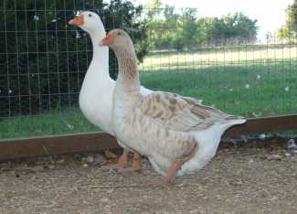

What color are the cows that produce the milk you drink? White with black spots? Maybe white with brown spots? What about black with a white stripe in the middle? Or a blue-gray speckled pattern? All those variations represent different breeds, but odds are that the milk you drink comes from Holsteins (white with black or brown spots). According to the Holstein Association, the group that registers pedigrees of purebred Holstein cattle, “nine out of 10 dairy producers [in the United States] milk Holsteins.” (By the way, the color of the cow does not affect the color of the milk she gives.)
Because Holsteins are such a popular breed, will other breeds become extinct in 50 or 100 years? What if other breeds of cattle produced milk with more desirable qualities? If groups such as the American Livestock Breeds Conservancy (ALBC) are successful, we’ll have as many breeds of livestock 100 years from now as we do today. The ALBC maintains a list of rare and endangered breeds of domesticated animals and promotes their preservation.
The ALBC’s watchlist for endangered livestock classifies rare breeds as “critical” (global population less than 2,000), “threatened,” “watch” and “recovering.” The system is slightly different for rabbits and poultry. In addition to numbers of animals, there are other criteria for the classifications.
Each breed of livestock has unique traits, though they may not be as productive as breeds that industrial agriculture depends most heavily on. “The productive life of a Holstein cow is between three and four years,” according to the Holstein association. But many heritage breeds, such as Dutch Belted cows, are often productive into their teen years. Dutch Belted cows are efficient milk producers on a grass-based diet with little additional grain. And grass-fed cattle produce milk with important health benefits to humans. Click here and here for more information.
When you raise heritage breeds, you won’t simply preserve history, you’ll experience it. Most heritage breeds have an interesting story to tell: where the breed originated, when they were first imported to the United States, and who kept the breed going. Learning the history of the heritage breeds you raise can be an adventure!
You can also take pleasure in knowing that your livestock is unique - they’re not identical to your neighbors’ animals. Friends, neighbors and even people just driving by your homestead may stop and ask you about your unusual livestock. There is simply something fun about raising heritage breeds.
Other than nutrition, what’s the most important quality of food? Taste! Slow Food USA has included meat from many heritage breeds in the Ark of Taste, whose mission is to preserve endangered tastes. Several taste tests also rated meat from heritage breeds highly.
And we don’t know what the future may bring. When a heritage breed becomes extinct, we lose the unique genetic traits of that breed and the gene pool shrinks. Of course, we’ll never know what beneficial traits might die with a rare breed.
Other groups promote rare breeds, too. The Society for the Preservation of Poultry Antiquities specifically promotes heritage poultry. The Rare Breeds Survival Trust has similar goals for breeds found in the United Kingdom.
For more information on heritage breeds, read Saving Rare Breeds, Preserve Heritage Hogs and Discover Better Flavor this Thanksgiving.
|
 TROY GRIEPENTROG Both the American Buff goose (foreground) and Pilgrim gander are included on the “critical” list of heritage breeds by the American Livestock Breeds Conservancy. |
|
|